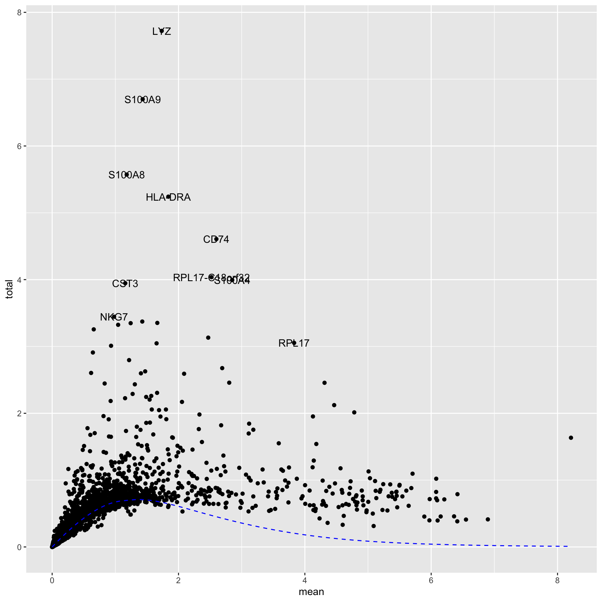
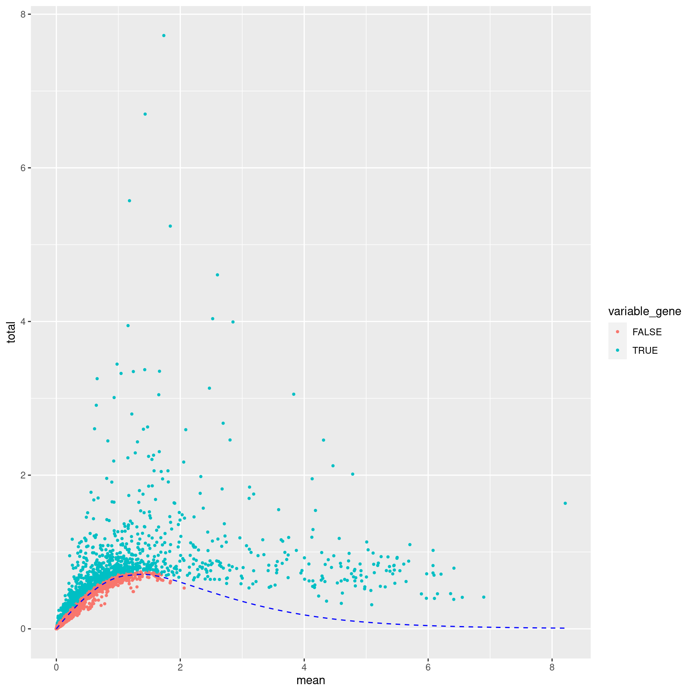
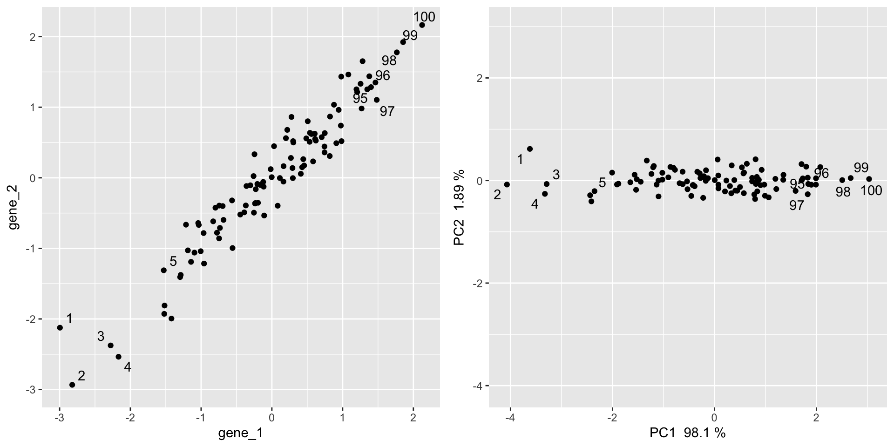
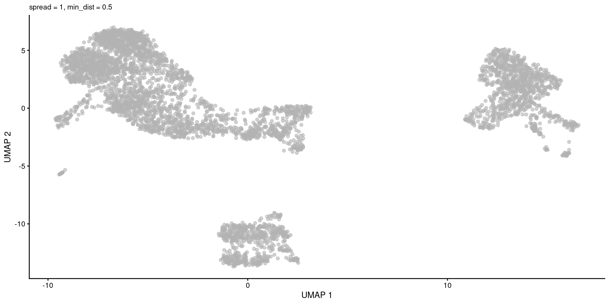
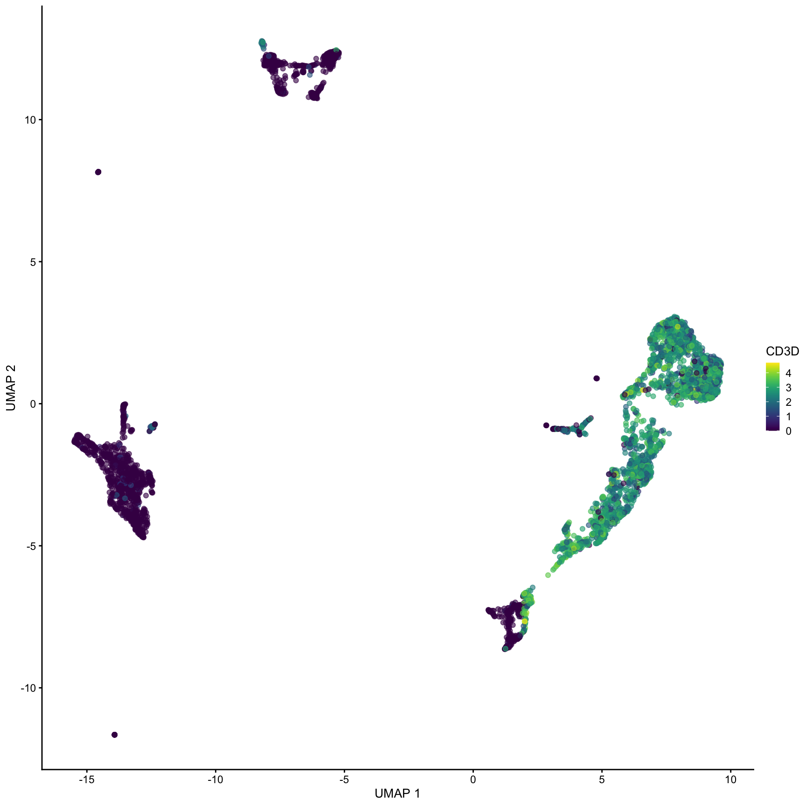
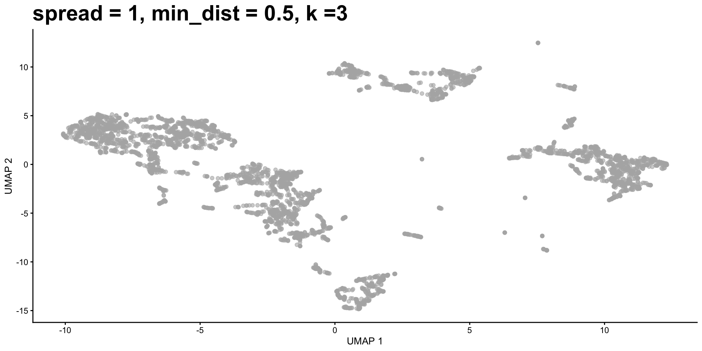
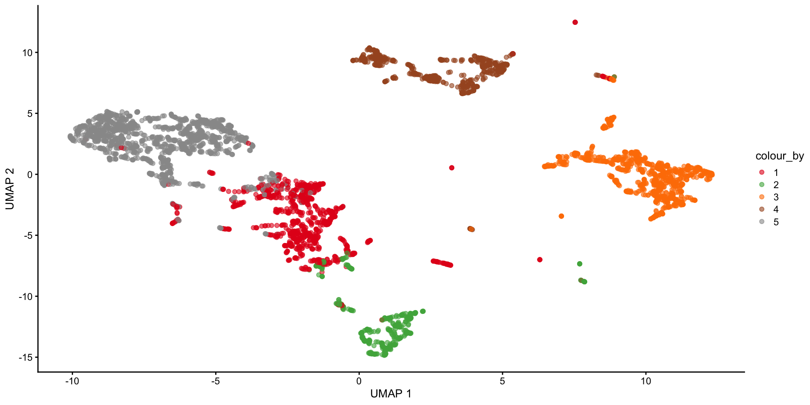
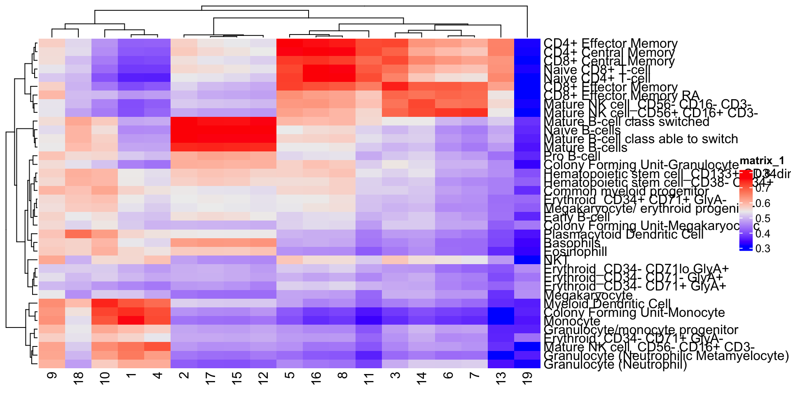

Single cell RNA-Seq:
Clustering, Dimensionality reduction, and cell-type annotation
Kent Riemondy and Kristen Wells
RNA Bioscience Initiative | CU Anschutz
2024-10-12
Contact Info
Greetings experimentalist humans 👋
kristen.wells-wrasman@cuanschutz.edu
RBI Informatics Fellows Office hours
Learning Objectives
Lecture 1
- Identify key quality control issues with single cell RNA-seq data and perform filtering onto exclude poor quality cells
- Interact with single cell data using Bioconductor
Lecture 2
- Perform analysis to identify cell types in single cell data by using unsupervised clustering methods and comparing to public datasets
- Describe the importance and reasoning for conducting each step of the analysis
Learning key
- We will switch between lecture and your exercise
qmd. - To denote a slide that corresponds to your exercise, I will include ⌨️ in the slide title
Analysis steps revisited
Normalize and log transform UMI counts to correct for sequencing depth.
Select genes with high variance to use for clustering and UMAP generation
Use PCA to reduce the size of the dataset to ~20-50 dimensions
Use UMAP or tSNE to further reduce the PCA matrix into 2D for visualization
Use clustering on PCA matrix to identify clusters of related cells.
Find marker genes that are specifically expressed in each cluster.
Compare the gene expression profile of each cluster to public data to help annotate the cell type.
TL;DR ⌨️
# normalize data
clusters <- quickCluster(sce)
sce <- computeSumFactors(sce, clusters=clusters)
sce <- logNormCounts(sce)
# get variable genes
dec <- modelGeneVarByPoisson(sce)
top <- getTopHVGs(dec, prop=0.1)
# get PCA and UMAP
sce <- runPCA(sce, subset_row = top)
sce <- runUMAP(sce, dimred = "PCA")
# cluster cells
sce$clusters <- clusterCells(sce, use.dimred = "PCA")
# get marker genes
mrks <- scoreMarkers(sce, sce$clusters)
...Rerun steps from previous class ⌨️
# load data
library(tximport)
tx <- tximport(
here("data/block-rna/scrna/pbmc/alevin/quants_mat.gz"),
type = "alevin"
)
# setup gene ids
sce <- SingleCellExperiment(list(counts = tx$counts))
ah <- AnnotationHub()
ens_db <- ah[["AH113665"]]
gene_names <- mapIds(ens_db,
keys = rownames(sce),
keytype = "GENEID",
column = "SYMBOL"
)
rowData(sce)$gene <- gene_names
rowData(sce)$gene_id <- rownames(sce)
rownames(sce) <- uniquifyFeatureNames(
rowData(sce)$gene_id,
rowData(sce)$gene
)
# drop non/low expressed genes
rowData(sce)$n_cells <- rowSums(counts(sce) > 0)
sce <- sce[rowData(sce)$n_cells >= 10, ]
# basic QC
is_mito <- startsWith(rowData(sce)$gene, "MT-")
sce <- addPerCellQCMetrics(sce, subsets = list(Mito = is_mito))
sce$pass_qc <- sce$subsets_Mito_percent < 20 & sce$sum > 1000 & sce$detected > 500
sce <- sce[, sce$pass_qc]Normalization refresher ⌨️
quickCluster(): Crude clustering to group related cells into groups with similar expression profiles
computeSumFactors(): Pool counts across clusters to establish an average cell profile for each cluster. Then use deconvolution to estimate a cell-specific scaling factor for normalization
logNormCounts(): Apply scaling factors (size factors) to counts and log transform with a pseudocount.
set.seed(20231023)
clusters <- quickCluster(sce)
sce <- computeSumFactors(sce, clusters = clusters)
sce <- logNormCounts(sce)
logcounts(sce)[50:60, 1:4]11 x 4 sparse Matrix of class "dgCMatrix"
GCTGCAGTCCGATCTC ACTATGGAGGTCCCTG ATTTCTGTCTCTATGT TATCTGTAGGTGATAT
CPTP . 0.2645668 . .
TAS1R3 . . . .
DVL1 . 0.2645668 . .
MXRA8 . . . .
AURKAIP1 0.3500082 1.9327619 0.2923841 0.7922116
CCNL2 0.6314635 . 0.7432885 0.5731981
MRPL20-AS1 0.3500082 0.2645668 0.2923841 .
MRPL20 0.8668712 1.1425125 0.9249737 0.7922116
RN7SL657P . . . .
MRPL20-DT . . . 0.3148810
ATAD3C . . . . Variable gene selection
Genes that have high variance across cells are genes that tend to be differentially expressed between cell types
Low variance genes are usually low-expressed or “house-keeping” genes whose expression will not help us distinguish between cell populations
Including these genes could potentially introduce more technical variation rather then helpful biological variation.
Keeping uninteresting genes will increase the computational burden and likely either not improve or be deleterious to the clustering.
Variable gene selection ⌨️
modelGeneVarByPoisson(): Fit curve, using Poisson distribution, to variance against the mean expression distribution. Estimate technical (Poisson estimate) and biological (the residuals from the Poisson) variance for each gene.
getTopHVGs(): Filter output from modelGeneVarByPoisson to select top variable genes. Use prop to identify the proportion of genes to call highly variable or n to identify a number. Often starting between 1000-2000 is best.
Variable gene selection ⌨️
modelGeneVarByPoisson(): Fit curve, using Poisson distribution, to variance against the mean expression distribution. Estimate technical (Poisson estimate) and biological (the residuals from the Poisson) variance for each gene.
getTopHVGs(): Filter output from modelGeneVarByPoisson to select top variable genes. Use prop to identify the proportion of genes to call highly variable or n to identify a number. Often starting between 1000-2000 is best.
Variable gene selection ⌨️
We can plot mean expression against variance to see the trend and visualize the top variable genes. These are often marker genes of specific cell populations.
Variable gene selection
Dimensionality reduction
Dimensionality reduction is the concept of transforming high dimensional data and representing it with a smaller set of dimensions.
We can reduce the # of dimensions without loosing much information because many features (genes) are highly correlated which can be approximated with fewer dimensions.
This is analogous to reducing the gene expression data into a set of metagenes that represents the expression of many correlated genes.
Using fewer dimensions makes computation much quicker and as we will see will reorder the data in a manner that still captures the heterogeneity in the data.
Dimensionality reduction via PCA
We will use PCA to reduce the dimensionality of the data from 20,000 genes to ~10-50 principle components.
PCA takes a matrix of features (genes) and samples (cells) and transforms the matrix into a new set of features known as a principal components. A principal component is a linear combination of the original genes that is oriented to capture variance in the dataset.
PC1 is a vector through the dataset oriented in a direction that spans the most variation in the data. The second component is another linear combination of the original variables but is uncorrelated to the first component (points in an orthogonal direction).
In a geometric sense, PCA produces a new coordinate system whereby instead of the axes being each gene, the axes are each a PC and the first axis points through the largest spread in the data.
PCA in 2 dimensions
In this two dimensional space, PCA minimizes the distances from a line and every point in the x and y direction (think of a regression line). For a great walk through of how PCA works, see section 7.3 in Modern Statistics for Modern Biology
PCA with more dimensions
- If we add more dimensions, we now need to fit this line in a much higher dimensional space while still minimizing the distance of each point from the line.
- We end up with the same number of PCs as the number of our initial dimensions
- In our 2-D example, we get two PCs
- Adding more genes increases the number of PCs.
What if we had more dimensions that are uninteresting variance/noise? How does this impact the PCA?
gene_1 gene_2 gene_noise_1 gene_noise_2 gene_noise_3
1 -2.995217 -2.123704 0.089215287 -0.40819808 -0.48037882
2 -2.821900 -2.933205 -0.339377410 -0.03582506 0.41886793
3 -2.278693 -2.375272 0.131539067 -0.42624492 0.28643147
4 -2.167279 -2.535480 0.098178061 -0.20509451 -0.06692551
5 -1.528019 -1.310610 0.007170167 0.04159706 0.03533156PCA as dimensional reduction
- PC 1 and PC 2 capture less of the total variance (from capturing 100% of the variance to capturing about 80% of the variance)
- Additionally, the points are spread more and differently because the distance had to be minimized in a higher dimensional space
- However adding random noise does not dramatically change PC1 and PC2
computing PCA with scater ⌨️
runPCA(): computes an approximate truncated PCA, returning 50 PCs by default.
reducedDim(sce, "PCA"): function to access or assign reduced dimensionality results
plotPCA(): plot 2 or more PC components
plotReducedDim(): plot 2 or more dimensions or arbitrary reducedDim() matrix
computing PCA with scater ⌨️
runPCA(): computes an approximate truncated PCA, returning 50 PCs by default.
reducedDim(sce, "PCA"): function to access or assign reduced dimensionality results
plotPCA(): plot 2 or more PC components
plotReducedDim(): plot 2 or more dimensions or arbitrary reducedDim() matrix
How many PCs to retain? ⌨️
In general the # of PCs to use for downstream steps depends on the complexity and heterogeneity in the data, as well as the biological question. For this analysis we will retain the top 30, but you should explore how the downstream steps are affected by including fewer or more PCs.
In practice picking fewer PCs will identify fewer subpopulations, and picking more PCs will find more subpopulations, at the expense of potentially increased noise and longer runtime.
How is PCA data stored? ⌨️
PC1 PC2 PC3 PC4
GCTGCAGTCCGATCTC -17.7865879 -5.494428 -3.609731 -2.2119402
ACTATGGAGGTCCCTG -0.0933944 7.195291 2.840164 0.0138008
ATTTCTGTCTCTATGT -17.8824692 -1.533912 -3.546737 0.5637093
TATCTGTAGGTGATAT -16.7533963 -2.843034 -5.289824 -1.3747961Which dimensional reduction to use
PCA
- Used by early studies (and bulk methods)
- In bulk studies, we expect to have a large amount of variation captured by PC1 (>50%)
- Best for small and simple data sets
- In large single cell studies lots of information is present at the higher principal components
UMAP
- Popular in current single cell studies
- Does a good job of preserving local differences between cells while balancing global differences
Projecting PCs into 2 dimensions (UMAP, tSNE, etc.) ⌨️
Non-linear dimensionallty reductions are commonly used to project the PCA matrix into 2 dimensions for visualization
This entails trying to reduce the ~10-50 PCA dimensions into a 2 dimensional space.
To do this the algorithm performs non-linear transformations that distort the true distances between cells
Attempts to balance global and local differences to produce visualization that capture variation in data.
runUMAP() and runTSNE()
Plotting the UMAP ⌨️
Plotting the UMAP ⌨️
We can also color by any gene expression
Plotting the UMAP ⌨️

Parameters affect the visualization



Clustering
We use clustering to assign cells to discrete cell populations. This is a simplification of the true complexity of the underlying data.
Clustering is a data analysis tool rather than a result. We can increase, decrease, merge, or subset clusters at our whim by changing clustering parameters, the # of PCs used, the # of variable genes, and the particular cell subsets analyzed.
There is no correct or valid number of clusters. It depends on what biological question you are trying to explore and at what granularity you want to ask the question.
[A]sking for an unqualified “best” clustering is akin to asking for the best magnification on a microscope without any context - OSCA book
Graph based clustering
Approach:
- identify the K nearest neighbors of each cell in the PCA matrix (e.g. k = 10)
- weight the connection between cells based on “connectivity” of shared nearest neighbors (total number, proportion, average rank of neighbors, etc.)
- apply a community detection algorithm to cluster the shared nearest neighbor graph (walktrap, louvain, leiden, etc.)
clusterCells()
Clustering ⌨️
Note that the clustering is performed on the PCA matrix not the 2D UMAP plot
Clustering ⌨️
The parameters of the clustering can be changed by changing the NNGraphParam. Here are the defaults:
library(bluster)
set.seed(10101010)
clusters <- clusterCells(sce,
use.dimred = "PCA",
BLUSPARAM = NNGraphParam(
k = 10,
type = "rank",
cluster.fun = "walktrap"
)
)
table(clusters)clusters
1 2 3 4 5 6 7 8 9 10 11 12 13 14 15 16
766 257 552 122 369 211 141 1409 52 74 55 63 44 47 103 97
17 18 19
163 24 16 Clustering ⌨️
The parameters of the clustering can be changed by changing the NNGraphParam. Here are the defaults:
Clustering ⌨️
Clustering ⌨️

Clustering ⌨️
Generally increasing the # of neighbors will decrease the number of clusters and vice versa.
Clustering ⌨️
Clustering ⌨️
What clusters are the genes S100A8, CD79A and CD3G most highly expressed in? We can use the plotExpression() function to visualize the expression data in each cluster.
How many clusters?
Clustering algorithms produce clusters, even if there isn’t anything meaningfully different between cells. Determining the optimal number of clusters can be tricky and also dependent on the biological question.
Some guidelines:
Cluster the data into a small number of clusters to identify cell types, then recluster to generate additional clusters to define sub-populations of cell types.
To determine if the data is overclustered examine differentially expressed genes between clusters. If the clusters have few or no differentially expressed genes then the data is likely overclustered. Similar clusters can be merged post-hoc if necessary as sometimes it is difficult to use 1 clustering approach for many diverse cell populations. Using a reference-based approach to name cell types will also often merge similar clusters.
A hybrid approach is to first annotate major cell types using a small # of clusters (e.g. B-cell, T-cell, Myeloid, etc.), then subset the SingleCellExperiment object for each cluster and perform additional clustering to obtain ‘subclusters’ (e.g. b-cell-subset 1, b-cell-subset 2, t-cell-subset-1, etc.)
Identifying marker genes using scoreMarkers()
Clustering algorithms produce clusters, even if there isn’t anything meaningfully different between cells. Determining the optimal number of clusters can be tricky and also dependent on the biological question.
Some guidelines:
Cluster the data into a small number of clusters to identify cell types, then recluster to generate additional clusters to define sub-populations of cell types.
To determine if the data is overclustered examine differentially expressed genes between clusters. If the clusters have few or no differentially expressed genes then the data is likely overclustered. Similar clusters can be merged post-hoc if necessary as sometimes it is difficult to use 1 clustering approach for many diverse cell populations. Using a reference-based approach to name cell types will also often merge similar clusters.
A hybrid approach is to first annotate major cell types using a small # of clusters (e.g. B-cell, T-cell, Myeloid, etc.), then subset the SingleCellExperiment object for each cluster and perform additional clustering to obtain ‘subclusters’ (e.g. b-cell-subset 1, b-cell-subset 2, t-cell-subset-1, etc.)
Identifying marker genes using scoreMarkers() ⌨️
How do we identify marker genes? ⌨️
To identify marker genes we will need to decide of cutoffs based on effect sizes. There are many reported by scoreMarkers().
[1] "self.average" "other.average" "self.detected"
[4] "other.detected" "mean.logFC.cohen" "min.logFC.cohen"
[7] "median.logFC.cohen" "max.logFC.cohen" "rank.logFC.cohen"
[10] "mean.AUC" "min.AUC" "median.AUC"
[13] "max.AUC" "rank.AUC" "mean.logFC.detected"
[16] "min.logFC.detected" "median.logFC.detected" "max.logFC.detected"
[19] "rank.logFC.detected" How do we identify marker genes?
What is a marker gene? * Differentially expressed between cluster 1 and all others? * This could be too strict, what if the same gene marks clusters 1-8 but not 9? We would miss that as a marker * Differentially expressed between some or any pairwise clusters
The output of scoreMarkers() allows you to filter the data in many different ways depending on what type of marker you want to identify. Importantly it doesn’t hide the complexity of this data. I highly recommend reading the chapter on marker gene detection from the OSCA book to understand how best to identify markers depending on the dataset you are analyzing.
How do we identify marker genes?
- We will use
AUCto rank markers- Probability that a randomly chosen observation from our cluster of interest is greater than a randomly chosen obsevation from the other cluster
- Value of 1 = upregulated in the cluster of interest, 0 = downregulated, 0.5 = no difference.
- Other ranking options include log fold change or fold change in the detection rate
- Can chose
mean,min,median,max, orrankfor potential ranking
Paraphrasing from the OSCA book: * The most obvious summary statistic is the mean. For cluster X, a large mean effect size (>0.5 for the AUCs) indicates that the gene is upregulated in X compared to the average of the other groups. * Another summary statistic is the median, where a large value indicates that the gene is upregulated in X compared to most (>50%) other clusters. * The minimum value (min.) is the most stringent summary for identifying upregulated genes, as a large value indicates that the gene is upregulated in X compared to all other clusters. The maximum value (max.) is the least stringent summary for identifying upregulated genes, as a large value can be obtained if there is strong upregulation in X compared to any other cluster. The minimum rank, a.k.a., “min-rank” (rank.*) is the smallest rank of each gene across all pairwise comparisons. Specifically, genes are ranked within each pairwise comparison based on decreasing effect size, and then the smallest rank across all comparisons is reported for each gene. If a gene has a small min-rank, we can conclude that it is one of the top upregulated genes in at least one comparison of X to another cluster.
Cluster 1 genes ⌨️
Plotting top genes ranked by mean.AUC for cluster 1.
Top marker heatmap ⌨️
Next we will extract the top N markers from each cluster, ranked on mean.AUC, then plot the average expression of these markers in each cluster as a heatmap.
n_top_markers <- 5
top_markers <- purrr::map_dfr(mrks, ~ {
.x |>
as.data.frame() |>
tibble::rownames_to_column("gene") |>
dplyr::filter(mean.AUC > 0.5) |>
dplyr::arrange(desc(mean.AUC)) |>
dplyr::slice(1:n_top_markers)
}, .id = "cluster")
top_markers[1:10, 1:2] cluster gene
1 1 S100A9
2 1 S100A8
3 1 LYZ
4 1 MNDA
5 1 FCN1
6 2 BANK1
7 2 CD79A
8 2 MS4A1
9 2 TNFRSF13C
10 2 RALGPS2Top marker heatmap ⌨️
Next we will extract the top N markers from each cluster, ranked on mean.AUC, then plot the average expression of these markers in each cluster as a heatmap.

Some differnetial expression thoughts
- Differential expression in single cell RNA-seq should be interpreted with caution
- Data is very overpowered
- Individual cells are treated as independent replicates (often using a Wilcoxin test)
- They are however NOT independent
- Come from the same sample
- Come from identical processing
- Come from highly correlated environments
- This means that p-values will be inflated and there will be many false negatives
- Most methods don’t account for batch effects and # of DE genes does not change with increase variability between batches
- If you are performing DE between samples, it is better to use a pseudobulk approach and control for batch effect
- More info in two articles: false-discoveries, pseudoreplication bias
Annotating cell types
- Early days of single cell used manual cluster annotation
- Using visual inspection of key genes using expertise in the lab
- Now it is becomming more comon to compare your dataset to another dataset or a reference
- Leads to more reproducability and agreement across publications
- Not biased to only a handful of genes, instead thousand of genes are used
- Correlation and machine learning approaches are common
- Packages include
clustifyr,SingleR,SignacX, andAzimuth
Annotating cell types
We we use clustifyr which was developed by a previous RBI fellow Rui Fu. There are also many other methods (e.g. SingleR)
clustifyrcompares the average gene expression in each cluster to a reference matrix that contains average gene signatures of reference cell types.- The reference can be built from other single cell data, bulk-rna-seq, or other sources.
- Ranked spearman correlation is used to compare the reference to the clusters.
- Only the variable genes are used for the correlation.
- Fewer variable genes (ie 1000) are recommended as too many genes leads to high correlations across the board (think of a lot of zero values).
In order to compare our dataset we need to use a publicly available reference dataset. Thankfully many datasets have been organized into a separate package: clustifyrdatahub. This is an extension of the ExperimentHub package on bioconductor that allows you to easily download and cache external datasets.
Annotating cell types ⌨️
library(clustifyr)
library(clustifyrdatahub)
# get reference dataset derived from a microarray experiment of sorted immune cell types
ref_hema_microarray()[1:5, 1:5] Basophils CD4+ Central Memory CD4+ Effector Memory CD8+ Central Memory
DDR1 6.084244 5.967502 5.933039 6.005278
RFC2 6.280044 6.028615 6.047005 5.992979
HSPA6 6.535444 5.811475 5.746326 5.928349
PAX8 6.669153 5.896401 6.118577 6.270870
GUCA1A 5.239230 5.232116 5.206960 5.227415
CD8+ Effector Memory
DDR1 5.895926
RFC2 5.942426
HSPA6 5.942670
PAX8 6.323922
GUCA1A 5.090882Annotating cell types ⌨️
res <- clustify(
sce, # SingleCellExperiment object
ref_mat = ref_hema_microarray(), # cell type reference data
cluster_col = "clusters", # column in metadata with clusters
# don't add to SingleCellExperiment object, just return results
obj_out = FALSE,
# use variable genes for comparison
query_genes = top,
)
res[1:12, 1:4] Basophils CD4+ Central Memory CD4+ Effector Memory CD8+ Central Memory
1 0.5370093 0.4111325 0.4176017 0.3936302
10 0.5945973 0.4591039 0.4655590 0.4433302
11 0.4386922 0.7151960 0.7115503 0.6798845
12 0.6333579 0.5402749 0.5289964 0.5160502
13 0.3935435 0.6535071 0.6516310 0.6321161
14 0.4656631 0.6099487 0.6324938 0.6493463
15 0.6258199 0.5493260 0.5378138 0.5284327
16 0.4883762 0.7668150 0.7549072 0.7346618
17 0.6277840 0.5580115 0.5459105 0.5343926
18 0.5650205 0.5267830 0.5237343 0.5021841
19 0.3379409 0.3154402 0.3177152 0.3003928
2 0.6210041 0.5744730 0.5678439 0.5518513Annotating cell types ⌨️
Annotating cell types ⌨️
We can use cor_to_call to pull out the highest correlation for each cluster
cor_to_call(res) # assign cluster to highest correlation cell type (above a threshold). Cell types lower than a threshold will be assigned as unassigned.# A tibble: 19 × 3
# Groups: cluster [19]
cluster type r
<chr> <chr> <dbl>
1 11 CD4+ Central Memory 0.715
2 13 CD4+ Central Memory 0.654
3 5 CD4+ Effector Memory 0.769
4 3 CD8+ Effector Memory 0.747
5 2 Mature B-cell class switched 0.772
6 14 Mature NK cell_CD56- CD16- CD3- 0.715
7 6 Mature NK cell_CD56+ CD16+ CD3- 0.729
8 7 Mature NK cell_CD56+ CD16+ CD3- 0.735
9 19 Megakaryocyte 0.462
10 1 Monocyte 0.756
11 4 Monocyte 0.713
12 10 Myeloid Dendritic Cell 0.743
13 9 Myeloid Dendritic Cell 0.641
14 12 Naïve B-cells 0.778
15 15 Naïve B-cells 0.794
16 17 Naïve B-cells 0.797
17 16 Naive CD4+ T-cell 0.781
18 8 Naive CD4+ T-cell 0.765
19 18 Plasmacytoid Dendritic Cell 0.673Annotating cell types ⌨️
Or we can insert the classification results into the SingleCellExperiment object directly which will be called type.

Saving and sharing objects
You can share your SingleCellExperiment objects with collaborators by saving the object as an
.rdsfile.If you plan on publishing the data, then the best practices are to upload the UMI count matrix and your colData() data.frame containing the cell type annotations.
To save the UMI count matrix use write10xcounts() from the DropletUtils Bioconductor package.
Saving and sharing objects
When saving the colData() it is also a nice gesture to include the UMAP coordinates that you used for the main visualizations in your manuscript. The clustering and UMAP coordinates are very hard to reproduce because of the non-deterministic elements of the algorithms.
Saving and sharing objects
- In addition to sharing count tables, in most cases (except for some cases of human data), you must publish your fastq files
- Make sure these are always protected using the 3-2-1 strategy:
- 3 copies
- 2 storage types
- 1 off site
- For me, this is:
- Peta library active allocation
- Peta library archive allocation
- AWS glacial storage (with version control)
- Nightly backup between each
- Changing the permissions to read only for fastq files
Saving and sharing objects
- It is also best practice to share your code
- Keep your code on github
- Version control - if you make a mistake it’s easy to go back
- Github counts as a backup for your scripts. The sever goes down, you can recover everything from github
- Easy to change a repo to public when your manuscript is accepted
Course website: https://rnabioco.github.io/molb-7950